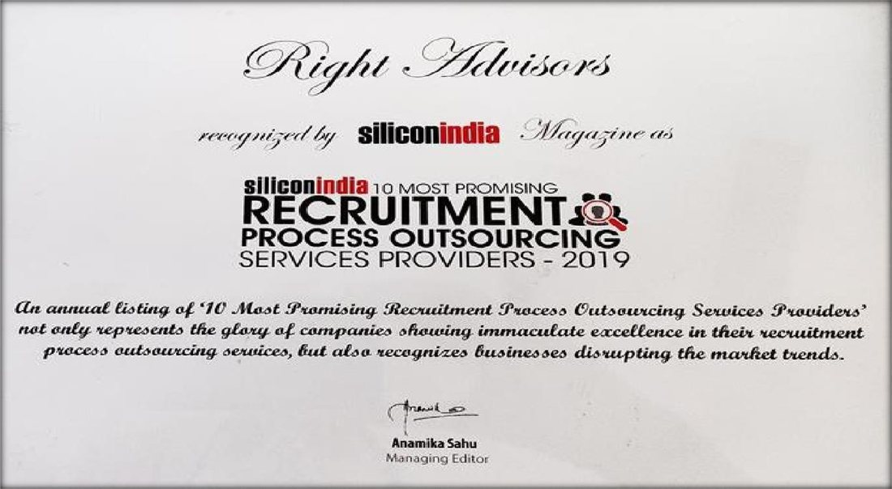

Mission
To simplify workforce management by providing reliable staffing, HR outsourcing and payroll services while helping organizations scale efficiently.
About Us
ABS Business Services was established in 2015 after the success of its group company Right Advisors Pvt. Ltd. The company provides flexible staffing, contractual manpower, payroll outsourcing and HR consulting services.
To simplify workforce management by providing reliable staffing, HR outsourcing and payroll services while helping organizations scale efficiently.
To become India's most trusted workforce management company by delivering scalable human capital solutions through technology, compliance and operational excellence.
Company Story
ABS was established after the success of its group company Right Advisors Pvt. Ltd., bringing recruitment understanding, client servicing discipline and operational HR capability into one workforce partner.
The company focuses on quality manpower, transparent operations, compliance-ready documentation and long-term relationships with employers and candidates. Its work spans staffing, payroll, statutory support and HR process management for organizations across India.
Leadership
 Founder & CEO
Founder & CEOFounder & Chief Executive Officer
Ms. Shalu Singhal is a qualified Chartered Accountant and Company Secretary with 22 years of work experience, having worked with leading organizations including ICICI Bank, KPMG, Deloitte and Gulf Audit (Bahrain).
She currently runs ABS Business Services Pvt. Ltd., providing recruitment, contractual staffing, managed services, payroll, statutory compliance management, manpower turnkey projects, NAPS & NATS, HR advisory & outsourcing, sales outsourcing, behavioral assessment and other manpower-related outsourcing projects for both India and overseas markets.
Values
Growth Timeline
ABS Business Services Pvt. Ltd. is founded in Faridabad, Haryana.
Capabilities grow across contract staffing, general staffing, payroll management, HR outsourcing and statutory compliance.
ABS strengthens deployment coordination, documentation, client reporting and employee support workflows.
ABS supports organizations across India with long-term workforce partnerships and scalable human capital solutions.
Recognition
ABS Business Services and its group company Right Advisors have been recognized by leading business publications in India and abroad.

siliconindia Magazine · 2019

SwiftNLift · Nov 2020

Insights Success

Japan Business Feature